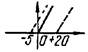
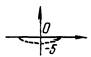
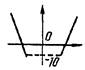
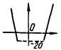
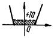
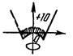

МИНИСТЕРСТВО
СТРОИТЕЛЬСТВА ПРЕДПРИЯТИЙ
НЕФТЯНОЙ И ГАЗОВОЙ ПРОМЫШЛЕННОСТИ
ВСЕСОЮЗНЫЙ
НАУЧНО-ИССЛЕДОВАТЕЛЬСКИЙ ИНСТИТУТ
ПО СТРОИТЕЛЬСТВУ МАГИСТРАЛЬНЫХ ТРУБОПРОВОДОВ
ВНИИСТ
ГЛАВНОЕ
УПРАВЛЕНИЕ ПО СТРОИТЕЛЬСТВУ МАГИСТРАЛЬНЫХ
ТРУБОПРОВОДОВ, ПРОДУКТОПРОВОДОВ, АММИАКОПРОВОДОВ
ГЛАВТРУБОПРОВОДСТРОЙ
ГЛАВНОЕ
УПРАВЛЕНИЕ ПО СТРОИТЕЛЬСТВУ МАГИСТРАЛЬНЫХ
ТРУБОПРОВОДОВ В ВОСТОЧНЫХ РАЙОНАХ
ГЛАВВОСТОКТРУБОПРОВОДСТРОЙ
ИНСТРУКЦИЯ
ПО РЕКУЛЬТИВАЦИИ ЗЕМЕЛЬ
ПРИ СТРОИТЕЛЬСТВЕ ТРУБОПРОВОДОВ
ВСН 179-85
Миннефтегазстрой
Москва 1985
Настоящая Инструкция устанавливает новые методы рекультивации земель при строительстве магистральных трубопроводов.
Впервые предусматривается применение для рекультивации земель машин непрерывного действия, а также проведение работ по снятию плодородного слоя почвы в зимнее время года без предварительного рыхления мерзлых почв.
Инструкция предназначена для проектных и строительных организаций, занятых сооружением магистральных трубопроводов.
Инструкция разработана А.С. Шацким при участии А.И. Зиневича, К.И. Зайцева, А.И. Гальперина, Н.Т. Виленской, Х.М. Сайфулова, Э.Г. Амчеславского, В.А. Смирнова, Л.П. Семенова, Г.И. Карташева, С.И. Ларина (ВНИИСТ), Л.М. Куликова, В.А. Лысова (Главвостоктрубопроводстрой), Е.А. Подгорбунского, Р.М. Исмагилова (Главтрубопроводстрой), М.П. Гришаева, А.И. Ащеулова, В.А. Овчинникова (Минсельхоз), А.П. Иофинова (Башсельхозинститут).
Инструкция согласована Минсельхозом СССР и Гослесхозом СССР.
С введением в действие «Инструкции по рекультивации земель при строительстве трубопроводов» ВСН 179-85/Миннефтегазстрой утрачивает силу «Инструкция по рекультивации земель при строительстве магистральных трубопроводов» ВСН 2-59-75/Миннефтегазстрой, «Руководство по рекультивации земель при строительстве магистральных трубопроводов» (Р 204-75).
Замечания и предложения по настоящей Инструкции направлять по адресу: Москва, 105058, Окружной проезд, 19, ВНИИСТ, отдел механизации-строительства.
|
Министерство строительства предприятий нефтяной и газовой промышленности |
Ведомственные нормы Инструкция по рекультивации земель при строительстве трубопроводов |
ВСН 179-85 |
|
Миннефтегазстрой Взамен ВСН 2-59-75 |
||
|
Миннефтегазстрой Р 204-75 |
1.1. Настоящая Инструкция распространяется на технологию ведения земляных работ при строительстве линейной части и наземных объектов магистральных трубопроводов с применением новых технологических решений и новых технических средств непрерывного действия для выполнения работ по сохранению плодородия земель.
1.2. При разработке проектной документации по технологии и организации земляных работ следует руководствоваться настоящей Инструкцией, а также требованиями действующих стандартов, нормативных документов и рекомендаций [1-17].
1.3. Выполнение всего комплекса земляных работ, включая снятие плодородного слоя почвы и его возвращение, должно осуществляться поточно в соответствии с проектами организации и производства работ.
1.4. Предоставляемые во временное пользование земельные участки после окончания строительства трубопроводов должны быть восстановлены под те же виды угодий, какими они были до нарушения, путем выполнения технической и биологической рекультивации.
1.5. Биологической рекультивации подлежит площадь строительной полосы, подвергшаяся воздействию строительных машин и другим видам механического воздействия на почву. Она выполняется землепользователями. В настоящей Инструкции рассматриваются приемы технической рекультивации, выполняемой строителями трубопроводов.
1.6. Полоса отвода земель на лесных участках по окончании строительства должна быть очищена от пней, других древесных остатков и спланирована.
1.7. При производстве земляных работ необходимо применять способы и методы, исключающие эрозионные процессы (размыв, выдувание), оползневые явления, а также засоление, загрязнение, захламление или заболачивание земель.
|
Внесена ВНИИСТом, Главтрубопроводстроем, Главвостоктрубопроводстроем |
Утверждена Миннефтегазстроем 8.12.1984 г. |
Срок введения в действие 1 июня 1985 г. |
1.8. Рекультивация строительной полосы после засыпки магистральных трубопроводов должна осуществляться в процессе строительства трубопроводов, а при невозможности этого - после завершения строительства в сроки, устанавливаемые органами, предоставляющими земельные участки в пользование в соответствии с утвержденными в установленном порядке проектами.
1.9. В проекте рекультивации земель в соответствии с условиями предоставления земельных участков в пользование и с учетом местных природно-климатических особенностей должны быть определены:
площади по трассе трубопровода, на которых необходимо проведение технической и биологической рекультивации;
объем снимаемого плодородного слоя почвы;
место расположения отвала для временного хранения снятого плодородного слоя почвы;
допустимое превышение нанесенного плодородного слоя почвы над уровнем ненарушенных земель;
объем и способы погрузки и вывозки лишнего минерального грунта после засыпки трубопровода;
стоимость работ по технической и биологической рекультивации.
1.10. Выполнение земляных работ должно осуществляться безопасными методами с соблюдением правил техники безопасности и производственной санитарии [11-14].
1.11. К производству земляных работ и рекультивации земель допускаются лица, прошедшие обучение; инструктаж и проверку знаний по технике безопасности в соответствии с ОСТ 102-78-83. ССБТ "Организация обучения рабочих безопасности труда. Общие положения".
1.12. Руководство земляными работами и работами по рекультивации земель, а также по обеспечению условий и требований охраны труда в специализированных управлениях возлагают на руководителей и главных инженеров этих управлений. В строительных истоках или на участках, где непосредственно выполняются работы, ответственность за соблюдение требований безопасности труда возлагают на начальников потоков, участков, прорабов и мастеров.
2.2. Одним проходом по оси траншеи роторным экскаватором ЭТР 254-05 снимают плодородный слой почвы с полосы шириной 3,5 м (рис. 1). Техническая характеристика рекультиватора ЭТР 254-05 приведена в прил. 1.
2.3. Отвал почвы укладывают на полосу земляных работ (Б) на расстояние 5-7 м от края полосы рекультивации до середины отвала (рис. 1а).
2.4. Траншею разрабатывают перемещающимися по полосе, свободной от плодородного слоя почвы, экскаваторами (рис. 1б), марки которых в зависимости от диаметров сооружаемых трубопроводов приведены в прил. 1, 2.
2.5. После прохода строительного потока уложенный в траншею трубопровод засыпают, перемещая из отвала весь минеральный грунт бульдозером ДЗ-18, ДЗ-27 (рис. 1в). Технические характеристики бульдозеров приведены в прил. 3.
2.6. Избыток минерального грунта распределяют по полосе рекультивации продольным проходом бульдозера ДЗ-18, ДЗ-27 или автогрейдером ДЗ-40Б и уплотняют бульдозером. После выполнения этой операции полоса рекультивации должна представлять собой выемку с четко обозначенными краями (рис. 1в).
2.7. Возвращение плодородного слоя почвы выполняют бульдозерами ДЗ-18, ДЗ-27, перемещающими его из отвала хранения, распределяющими и выполняющими окончательную планировку продольными проходами (рис. 1г). Для планировки поверхности могут использоваться автогрейдеры любых марок, технические характеристики которых приведены в прил. 4.
2.8. Возвращение плодородного слоя почвы можно выполнять экскаватором ЭТР 254-05. В этом случае проход выполняют глубже основания отвала почвы, чтобы компенсировать потери почвы в гребнях, остающихся по бокам рабочего органа. Планировку этих гребней выполняют продольными проходами бульдозеров или автогрейдером.
|
Диаметр трубопровода, мм |
Параметры строительной полосы |
|||||||
|
Полоса монтажных работ А, м |
Полосы земляных работ, м |
|||||||
|
1 |
2 |
3 |
4 |
5 |
Б |
В |
||
|
До 426 |
11 |
3,5*) |
2,0 |
1,5 |
3,0 |
4,0 |
14,0 |
0,9-1,4 |
|
529-726 |
12,5 |
3,5 |
2,5 |
1,5 |
3,0 |
5,0 |
15,5 |
0,9-1,9 |
|
820 |
12,7 |
3,5 |
4,5 |
1,0 |
3,0 |
6,0 |
18,0 |
1,2-3,0 |
|
1020 |
12,7 |
3,5 |
5,0 |
4,0 |
4,0 |
6,2 |
22,7 |
1,5-3,5 |
|
1220 |
13,2 |
3,5 |
6,0 |
4,0 |
4,0 |
6,6 |
24,1 |
1,6-3,5 |
|
1420 |
13,4 |
3,5 |
7,0 |
4,0 |
4,0 |
6,6 |
25,1 |
2,1-3,5 |
*)Допускается использовать для снятия плодородной почвы роторные экскаваторы с шириной рабочего органа 0,9 и 1,8 м при строительстве трубопроводов диаметром соответственно до 200 и 300 мм.
Рис. 1. Последовательность операций земляных работ при строительстве трубопроводов диаметром до 820 мм при любой мощности плодородного слоя, а также при строительстве трубопроводов диаметром 1020-1420 мм при мощности плодородного слоя более 50 см:
А - полоса монтажных работ; Б - полоса земляных работ; В - ширина траншеи
3.1. Подготовку строительной полосы выполняют так же, как при строительстве трубопроводов малых диаметров (см. п. 2.1).
3.2. Плодородный слой почвы снимают роторным экскаватором ЭТР 254-05 с полосы шириной 3,5 м и укладывают на полосу земляных работ на расстоянии 11-13 м от края полосы рекультивации до середины отвала. Для этого транспортеры экскаваторов ЭТР 254-05, имеющие гидравлическую подвеску, оснащают устройством, увеличивающим дальность транспортировки грунта. При отсутствии таких устройств или при тросовой подвеске транспортера, не допускающей установку дополнительных средств, слой плодородной почвы снимают экскаватором ЭТР 254-05 и дополнительно перемещают бульдозером.
3.3. Последовательность дальнейших операций зависит от мощности плодородного слоя почвы.
3.4. Последовательность операций земляных работ при мощности плодородного слоя почвы более 50 см и параметры строительной полосы приведены на рис. 1.
3.5. При мощности плодородного слоя почвы 20-50 см необходимо проводить операции в следующей последовательности:
3.5.1. Отвал плодородного слоя почвы снимают с полосы шириной 3,5 м экскаватором ЭТР 254-05 и укладывают на полосе земляных работ (рис. 2а).
3.5.2. Роторными или одноковшовыми экскаваторами, перемещающимися по полосе рекультивации, разрабатывают траншею, располагая отвал минерального грунта на полосе земляных работ на расстоянии 0,5-1,5 м от ее края (рис. 2б). Технология рытья и засыпки траншей приведена в разделе 5 настоящей Инструкции.
3.5.3. После прохода строительного потока уложенный в траншею трубопровод засыпают, перемещая весь минеральный грунт из отвала на полосу со снятым плодородным слоем почвы преимущественно мощными бульдозерами (рис. 2в).
3.5.4. Вторым проходом экскаватора ЭТР 254-05 по полосе земляных работ снимают плодородный слой почвы с полосы шириной 3,5 м, т.е. полосу рекультивации расширяют до 7 м. Снятый плодородный слой укладывают на отвал почвы, разработанной при первом проходе (рис. 2г).
|
Диаметр трубопровода, мм |
Параметры строительной полосы |
|||||||
|
Полоса монтажных работ, А, м |
Полосы земляных работ, м |
|||||||
|
1 |
2 |
3 |
4 |
5 |
Б |
В |
||
|
1020 |
12,7 |
3,5 |
5,0 |
4,0 |
4,0 |
26,2 |
22,7 |
1,5-,3,5 |
|
1220 |
13,2 |
3,5 |
6,0 |
4 0 |
4,0 |
6,6 |
24,1 |
1,6-3,5 |
|
1420 |
13,4 |
3,5 |
7,0 |
4,0 |
4,0 |
6,6 |
25,1 |
2,1-3,5 |
Рис. 2. Последовательность операций земляных работ при строительстве трубопроводов диаметром 1020-1420 мм при мощности плодородного слоя почвы 20-50 см:
А - полоса монтажных работ; Б - полоса земляных работ; В - ширина траншеи.
3.5.5. Избыток минерального грунта, расположенный над траншеей, распределяют по расширенной полосе рекультивации автогрейдерами ДЗ-40Б, ДЗ-14 или бульдозерами и уплотняют бульдозерами или кулачковыми катками (рис. 2д).
При выполнении каждой из перечисленных выше операций необходимо сохранить четко выраженные границы полосы рекультивации шириной 7 м, которая после завершения операций, указанных в п. 3.5.5, должна представлять собой выемку.
3.5.6. Бульдозерами ДЗ-18, ДЗ-27 или ДЗ-55 возвращают плодородный слой почвы на полосу рекультивации (рис. 2е).
3.5.7. При недостатке роторных экскаваторов ЭТР 254-05 допускается выполнение операций по снятию плодородного слоя почвы в немерзлом состоянии (п. 3.5.1) продольными проходами бульдозеров ДЗ-27, Д-155А, Д-355А на ширину ножей, но не менее 3,5 м с последующим расширением этой полосы до 8 м (п. 3.5.4) продольно-поперечными проходами бульдозеров тех же марок.
В зимний период операцию по снятию плодородного слоя почвы (см. п. 3.5.1) допускается выполнять также роторным экскаватором с рабочим органом шириной не менее ширины траншеи. Последующее расширение этой полосы до 8 м необходимо осуществлять в немерзлой почве бульдозерами вышеупомянутых марок.
3.5.8. Операции, предусмотренные в пп. 3.5.1-3.5.3, одинаково выполнимы в немерзлых и мерзлых грунтах.
4.1. Оптимальная технология ведения земляных работ в зимнее время.
4.1.1. Последовательность операций оптимальной технологии рекультивации приведена на рис. 3, 4.
4.1.2. Основное отличие этих технологических приемов от рассмотренных выше (рис. 1) общих технологических схем рекультивации заключается в размещении отвала плодородного слоя почвы на полосе монтажных работ.
4.1.3. Снятие плодородного слоя почвы выполняют рекультиватором ЭТР 254-05 без удлинителя транспортера.
4.1.4. Планировку отвала плодородного слоя почвы осуществляют продольным проходом бульдозеров ДЗ-18, ДЗ-27 на ширину их рабочих органов.
|
Диаметр трубопровода, мм |
Параметры строительной полосы |
|||||
|
Полоса монтажных работ, А, м |
Полосы земляных работ, м |
|||||
|
1 |
2 |
3 |
Б |
В |
||
|
До 426 |
11 |
3,5*) |
2,0 |
4,0 |
9,5 |
0,9-1,4 |
|
529-726 |
12,5 |
3,5 |
2,5 |
5,0 |
11,0 |
0,9-1,9 |
|
820 |
12,7 |
3,5 |
4,5 |
6,0 |
14,0 |
1,2-3,0 |
|
1020 |
12,7 |
3,5 |
5,0 |
6,2 |
14,7 |
1,5-3,5 |
|
1220 |
13,2 |
3,5 |
6,0 |
6,6 |
16,1 |
1,6-3,5 |
|
1420 |
13,4 |
3,5 |
7,0 |
6,6 |
17,1 |
2,1-3,5 |
*)Допускается использовать для снятия плодородной почвы роторные экскаваторы с шириной рабочего органа 0,9 и 1,8 м при строительстве трубопроводов диаметром соответственно до 200 и 300 мм.
Рис. 3. Последовательность операций оптимальной технологии земляных работ при строительстве трубопроводов диаметром до 820 мм при любой мощности плодородного слоя, а также при строительстве трубопроводов диаметром 1020-1420 мм при мощности плодородного слоя почвы более 50 см:
А - полоса монтажных работ; Б - полоса земляных работ; В - ширина траншеи
|
Диаметр трубопровода, мм |
Параметры строительной полосы |
|||||
|
Полоса монтажных работ, А, м |
Полосы земляных работ, м |
|||||
|
1 |
2 |
3 |
Б |
В |
||
|
1020 |
12,7 |
3,5 |
5,0 |
6,2 |
14,7 |
1,5-3,5 |
|
1220 |
13,2 |
3,5 |
6,0 |
6,6 |
16,1 |
1,6-3,5 |
|
1420 |
13,4 |
3,5 |
7,0 |
6,6 |
17,1 |
2,1-3,5 |
Рис. 4. Последовательность операций оптимальной технологии земляных работ при строительстве трубопроводов диаметром 1020-1420 мм при мощности плодородного слоя почвы 20-50 см:
А - полоса монтажных работ; Б - полоса земляных работ; В - ширина траншеи
4.1.5. Эти технологические приемы обусловливают наиболее экономное использование земель при строительстве, качество рекультивации и минимальную трудоемкость работ как технической, так и биологической рекультивации земель.
4.2. Технологию, приведенную в п. 4.1, следует применять при строительстве трубопроводов в немерзлых грунтах в сухое время года.
4.3. Плодородный слой почвы мощностью менее 20 см и немерзлом состоянии снимают продольными проходами бульдозеров. При этом ширину полосы рекультивации принимают на 1 м больше, чем при использовании экскаваторов ЭТР 254-05. Все операции земляных работ выполняют в зависимости от диаметра трубопровода в соответствии с технологическими схемами, приведенными в разделах 2 и 3. Расширение полосы рекультивации выполняют за счет уменьшения полос земляных работ 3 и 5 (рис. 1, 2). Для снятия плодородного слоя почвы в мерзлом состоянии следует использовать экскаватор ЭТР 254-05 или обычные роторные экскаваторы.
4.4. На участках, где ширина верха траншей, выемок и насыпей превышает 3,5 м (кривые, подходы к переходам, крановые узлы, участки со скальными и мерзлыми грунтами, требующими предварительного разрыхления механическими рыхлителями или взрывом и т.п.) плодородный слой почвы снимают со всей подлежащей разработке площади до начала земляных работ (срезка, планировка, рытье широких траншей, котлованов, отсыпка насыпей и т.п.).
4.4.1. Плодородный слой почвы снимают и перемещают в отвал хранения на одну или обе стороны зоны земляных работ на расстояние, обеспечивающее размещение и возвращение аморального грунта на нарушаемую площадь, не допуская при этом перемешивания его с плодородным слоем почвы.
4.4.2. В немерзлом состоянии плодородный слой почвы снимают роторными экскаваторами ЭТР 254-05, бульдозерами или одноковшовыми экскаваторами.
4.4.3. Плодородный слой почвы в мерзлом состоянии снимают за один или несколько проходов экскаватором ЭТР 254-05 и перемещают в отвал хранения бульдозером ДЗ-18, ДЗ-27; при общей ширине полосы рекультивации до 7 м его распределяют по полосе монтажных работ.
4.4.4. После выполнения земляных, монтажных и строительных работ минеральный грунт бульдозерами ДЗ-18, ДЗ-27, Д-355А возвращают на строительную полосу или площадку, разравнивают бульдозерами тех же марок или автогрейдерами, уплотняют кулачковыми катками или бульдозерами. Затем этими же бульдозерами из отвала перемещают плодородный слой почвы, разравнивая его по всей нарушенной площади.
4.4.5. После перемещения плодородного слоя почвы в случае образования выемок и насыпей их откосы укрепляют в соответствии с проектом работ на данный переход, например, укладкой дерна или посевом многолетних трав.
4.5. На участках с низкой несущей способностью грунтов следует снимать плодородный слой почвы с полосы шириной не менее 3,5 м одноковшовыми экскаваторами с укладкой его в отвал на полосу монтажных работ и разравниванием (см. п. 4.1). Это позволяет выполнять операцию по снятию плодородного слоя почвы одновременно с разработкой траншеи одноковшовым экскаватором с пониженным удельным давлением на грунт (ЭО-4221) или со сланей. Такой экскаватор может выполнить операции по засыпке трубопровода и возвращению плодородного слоя почвы по одному из вариантов разделов 2, 3 и п. 4.1, не ожидая просыхания грунта на участке.
4.6. В случае необходимости прокладки для осушения участка трассы дренажных канав или колодцев водосборников плодородный слой почвы и минеральный грунт необходимо последовательно укладывать по разные их стороны, а возвращать минеральный грунт и плодородный слой почвы в обратной последовательности.
4.7. В случае, когда проект производства работ предусматривает вывоз излишков минерального грунта, ширину полосы рекультивации определяют шириной траншеи и возможностью прохода по этой полосе экскаваторов, разрабатывающих траншею. Снятие плодородного слоя почвы целесообразно осуществлять роторными экскаваторами ЭТР 254-05 или экскаваторами с рабочими органами шириной 1,2-1,8 м. Возможно снятие плодородного слоя почвы одноковшовыми экскаваторами одновременно с разработкой траншеи и укладкой плодородного слоя почвы и минерального грунта по разные стороны траншеи в соответствии с п. 4.5.
5.1. Траншеи разрабатывают экскаваторами, перемещающимися по полосе рекультивации. При разработке траншей для трубопроводов диаметром до 1020 мм в грунтах прочностью выше III категории и мерзлых грунтах возможно перемещение экскаваторов над полосой снятого плодородного слоя почвы шириной 1,2-1,8 м.
5.1.1. Роторные экскаваторы (ЭТР) применимы на прямых участках трассы в нелипких грунтах без валунов. На сельскохозяйственных угодьях этими экскаваторами должно разрабатываться не менее 70 % траншеи.
5.1.2. Одноковшовые экскаваторы следует применять только в условиях, где неприменимы роторные экскаваторы: при переходах, перемычках, на кривых участках, в грунтах с включениями валунов, на переувлажненных грунтах, предварительно разрыхленных скальных грунтах.
5.1.3. В условиях, где неприменимы ЭТР, земляные работы следует, как правило, выполнять в немерзлых грунтах.
5.1.4. Для разработки траншей ускоренными темпами под трубопроводы диаметром до 1020 мм наиболее целесообразно применять ЭТР мощностью 184-220 кВт с узкими рабочими органами шириной 1,25 м (И-337, ЭТР 231) или 1,2-1,5 м (ЭТР 254-01)*). Они обеспечивают темп разработки траншей в немерзлых грунтах до 1,5-2,0 км в день в один проход. Такой же темп в грунтах сезонного промерзания может быть обеспечен комплектом из двух таких ЭТР при применении их дифференцированным способом, каждый из которых разрабатывает свою определенную часть траншеи без технологических перемычек. Главное условие эффективности таких комплектов - согласование рабочих подач входящих в них машин. Для экскаваторов с одной шириной роторов рабочие подачи согласовывают, изменяя глубину копания в зависимости от изменения прочности грунта по глубине траншеи и степени износа экскаваторов [16].
*) Экскаваторы со сменными рабочими органами шириной 1,2-1,5 м имеют индекс ЭТР 254-01, разработаны СКБ "Газстроймашина" по исходным требованиям ВНИИСТ и Главтрубопроводстроя, выпускаются МЭМЗом по заявкам главков и объединений.
5.1.5. Темп рытья траншей 1-1,5 км/день под трубопроводы диаметром более 1020 мм может быть достигнут в немерзлых грунтах комплектом из двух ЭТР мощностью 220 кВт, применяемых дифференцированным способом. Для этой цели наиболее рационален комплект из ЭТР 254-01 с шириной ротора 1,2 м и ЭТР 254 с рабочим органом шириной 1,8 или 2,1 м. При наличии в комплекте двух одинаковых ЭТР-254 согласование рабочих подач осуществляется согласно п. 5.1.4. В грунтах сезонного промерзания такими комплектами может быть достигнут темп до 1 км в сутки.
5.1.6. Дифференцированные способы рытья траншей комплектами, состоящими из одноковшовых экскаваторов и мощных бульдозеров, приводят к увеличению площади нарушенных земель. Поэтому их целесообразно применять на переходах и в скальных грунтах, где размеры траншеи значительно превышают обычные, а ширина полосы рекультивации обусловлена шириной траншеи.
Для повышения темпов рытья траншей в обычных условиях следует применять более мощные одноковшовые экскаваторы ЭО-5122 и НД-1500 по традиционной технологии.
5.2. Засыпка траншей при выполнении земляных работ на сельскохозяйственных угодьях предполагает возвращение в траншею определенной части отвала минерального грунта, его разравнивание и уплотнение на определенном уровне в зависимости от способа рекультивации.
5.2.1. Наиболее эффективными по трудоемкости и производительности землеройными машинами для засыпки траншей являются бульдозеры.
Для засыпки траншей трубопроводов малых диаметров и для присыпки трубопроводов больших диаметров могут использоваться роторные траншеезасыпатели ТР-351 (см. прил. 1).
Для присыпки трубопроводов следует применять роторные экскаваторы. Для их применения необходима предварительная планировка отвала грунта продольным проходом бульдозеров ДЗ-18, ДЗ-27.
Для обслуживания роторных траншеезасыпателей и экскаваторов необходимы бульдозеры ДЗ-18, ДЗ-27 (окончательная засыпка, планировка гребней грунта).
5.2.2. При засыпке траншей минеральный грунт перемещают поперечными проходами бульдозеров ДЗ-18, ДЗ-27 (диаметры до 1020 мм) или ДЗ-27, Д-355А (диаметры 1220-1420 мм). Форма сечения перемещенного отвала грунта приведена на рис. 1-4.
6.1. При сооружении наземных объектов магистральных трубопроводов плодородный слой почвы снимают со строительной полосы или площадки и перемещают в отвалы временного хранения в соответствии с проектом производства работ.
6.2. После завершения работ, включая и благоустройство территории на всей строительной площадке, излишний плодородный слой почвы следует использовать для улучшения малопродуктивных угодий. Порядок использования плодородного слоя почвы для этой цели должен предусматриваться проектом.
6.3. Операции по снятию и возвращению плодородного слоя почвы следует выполнять землеройными машинами, используемыми на земляных работах в наземном строительстве, преимущественно бульдозерами, одноковшовыми и роторными экскаваторами с использованием и без использования автотранспорта в соответствии с проектом.
6.4. Для снятия плодородного слоя почвы в мерзлом состоянии со строительных полос и площадей следует использовать роторные экскаваторы ЭТР 254-05 с последующим перемещением в отвал хранения или с непосредственной погрузкой в транспорт. При отсутствии роторных машин ЭТР 254-05 для рыхления почвы следует использовать механические рыхлители на тракторах мощностью 118-316 кВт.
6.5. При сооружении подъездных дорог плодородный слой почвы снимают со всей полосы строительства преимущественно роторными экскаваторами ЭТР 254-05 при необходимости с перемещением его в отвалы временного хранения бульдозерами или автотранспортом. Плодородный слой почвы должен быть сохранен и восстановлен на полосе строительства. Излишний плодородный слой почвы должен быть использован для улучшения близлежащих малопродуктивных угодий.
6.6. При сооружении внеплощадочных сетей и коммуникаций на землях сельскохозяйственного назначения работы по рекультивации земель проводят так же, как при строительстве линейной части трубопроводов или отводов от них (см. разделы 2, 3, 4).
6.7. Операции по возвращению плодородного слоя почвы допускается выполнять только при немерзлом состоянии почвы.
6.8. Технология рекультивации земель, нарушаемых при разработке карьеров предусматривает снятие плодородного слоя почвы со всей площади нарушаемых земель и перемещение ее в отвалы временного хранения.
6.8.1. После завершения работ в карьере в зависимости от рельефа местности предусматривают либо планировку выработки с последующим возвращением плодородного слоя почвы на всю ее поверхность, либо заполнение выработки минеральным грунтом, вытесняемым сооружаемым трубопроводом, с последующей его планировкой и возвращением на него плодородного слоя почвы, или планируют откосы выработки до уклонов, обеспечивающих их устойчивость. Впоследствии покрывают откосы плодородным слоем почвы и засевают многолетними травами. Рекультивация отработанных карьеров должна предусматриваться проектом.
6.8.2. Работы по снятию плодородного слоя почвы могут выполняться как в холодное, так и теплое время года, а работы по его возвращению только в теплое (безморозное) время года.
7.1. Специфика контроля качества рекультивационных работ при сооружении трубопроводов заключается в следующем:
после возвращения, разравнивания и уплотнения Минерального грунта на полосе рекультивации должна оставаться выемка (корыто) с четко ограниченными краями. Глубина выемки зависит от мощности плодородного слоя почвы;
при выполнении операций земляных работ не допускается смешивание плодородной почвы с минеральным грунтом;
мощность плодородного слоя почвы на полосе рекультивации должна быть не менее 30 см (в уплотненном состоянии). Если зональные почвы имеют меньшую мощность, то плодородный слой почвы должен быть нанесен такой же мощности.
7.2. Общие положения по контролю качества линейных земляных работ приведены в приложении 5. Выписка из "Основ земельного законодательства Союза СССР" приведена в приложении 6.
8.1. При производстве земляных работ и рекультивации земель с использованием землеройной техники следует руководствоваться следующими нормативными документами по технике безопасности:
СНиП III-4-80 "Техника безопасности в строительстве" [11]. "Правилами техники безопасности при строительстве магистральных стальных трубопроводов" [12];
Паспортами и Руководствами по эксплуатации машин, выдаваемыми предприятиями-изготовителями;
"Едиными правилами безопасности при взрывных работах" [14].
8.2. При строительстве объектов нефтяной и газовой промышленности в охранной зоне действующих коммуникаций (трубопроводов, линий электропередач и т.д.) следует руководствоваться "Инструкцией по безопасному ведению работ в охранных зонах действующих коммуникаций" (ВСН 159-83/Миннефтегазстрой), а также "Правилами охраны магистральных трубопроводов", утвержденными постановлением Совета Министров СССР от 12 апреля 1979 г., № 341 (М., Мингазпром, 1982); "Инструкцией по производству строительных работ в охранных зонах магистральных трубопроводов Министерства газовой промышленности" (М., Мингазпром, 1982); "Правилами охраны линий связи" (М., Связь, 1969);
"Правилами охраны высоковольтных электрических сетей" (М., Госэнергонадзор, 1961).
8.2.1. Весь персонал, занятый на строительстве объектов в охранной зоне действующих коммуникаций, должен пройти дополнительное обучение по безопасным методам труда независимо от сроков предыдущего обучения.
8.2.2. Земляные работы в полосе, ограниченной расстоянием 2 м по обе стороны от действующего трубопровода или электрического кабеля, а также в местах пересечения с подземными коммуникациями, должны производиться только вручную в присутствии представителя эксплуатирующей организации.
8.2.3. При проведении работ в охранных зонах отвалы минерального и плодородного грунта следует располагать между действующим и прокладываемым трубопроводами, оставляя свободной берму шириной не менее 0,5 м. Зоны расположения отвалов грунта (минерального и плодородного) указывают в проекте производства работ.
8.2.4. Для выполнения работ по засыпке трубопровода механизмами ответственный за проведение работ обязан выдать машинисту механизма по засыпке траншей схему производства работ, показать на месте границы работы механизма и расположение действующих трубопроводов.
8.2.5. Работы по засыпке, возвращению и планировке валика над действующим трубопроводом (в том числе и после зимней засыпки) следует выполнять по специально разработанной и согласованной с эксплуатирующей организацией технологии, исключающей наезд машин на действующий трубопровод. На эти работы выдается наряд-допуск.
8.2.6. Проезд землеройных и других машин над действующими коммуникациями допускается только по специально оборудованным переездам в местах, указанных эксплуатирующей организацией. Эти переезды устраивают из сборных железобетонных плит, соединенных стальными планками, приваренными к монтажным петлям. На участках, где действующие коммуникации заглублены менее 0,8 м, должны быть установлены знаки с надписями, предупреждающими об особой опасности. В местах, не оборудованных переездами через действующие коммуникации, проезд строительной техники (трактора, экскаватора, бульдозера, трубоукладчика и т.п.) и автотранспорта запрещен.
8.2.7. Запрещается передвижение строительных машин и механизмов в темное время суток, а также во время нетехнологических перерывов без сопровождения ответственного лица за безопасное производство работ в охранной зоне действующих коммуникаций.
8.2.8. Работа строительных и дорожных машин в охранной зоне ЛЭП разрешается при наличии у машинистов вышеуказанных машин наряда-допуска и при полностью снятом напряжении организацией, эксплуатирующей данную линию электропередачи.
8.2.9. Расстояние от подъемной или выдвижной части строительной машины в любом ее положении до вертикальной плоскости, образуемой проекцией на землю ближайшего провода, находящейся под напряжением воздушной линии электропередачи, приведено в таблице.
|
Напряжение, кВ |
до 1 |
1-20 |
35-110 |
150-220 |
330 |
500-750 |
800 (пост. ток) |
|
Расстояние, м |
1,5 |
2,0 |
4 |
5 |
6 |
9 |
9 |
8.2.10. Работа строительных машин под ЛЭП разрешается при напряжении 110 кВ и выше и расстоянии по вертикали от выдвижной части машины или груза до привода в соответствии с таблицей.
8.3. При эксплуатации строительных машин запрещается:
оставлять без надзора работающие механизмы;
отдыхать в зоне работающих машин и механизмов в плохо просматриваемых местах и вблизи от мест движения транспорта и машин;
курить и использовать открытый огонь при заправке машин;
ремонтировать машину с работающим двигателем;
находиться под машиной при работающем двигателе;
сходить с экскаватора при его движении или повороте платформы.
8.4. Экскаваторы и бульдозеры, используемые на земляных работах и рекультивации земель, должны быть оборудованы звуковой и световой сигнализацией.
8.5. При совместной работе экскаваторов и бульдозеров не допускается, чтобы бульдозер находился в зоне действия ковша экскаватора ближе, чем на 5 м.
8.6. Расстояние между работающими в комплекте землеройными машинами должно быть не менее 5 м.
Обязательное
ТЕХНИЧЕСКАЯ ХАРАКТЕРИСТИКА РОТОРНЫХ ЗЕМЛЕРОЙНЫХ МАШИН
|
Наименование параметров |
Марка траншейного экскаватора |
Марка траншеезасыпателя ТР-351 |
||||||
|
ЭТР-231 |
П-337 (ЭТР-231) |
ЭТР-253А |
ЭТР-254 |
ЭТР 254-01 |
ЭТР 254-02 |
ЭТР 254-05 |
||
|
Размеры отрываемой траншеи, м: |
||||||||
|
глубина |
2,3 |
2,3 |
2,5 |
2,5 |
2,5 |
3,0 |
2,5 |
- |
|
ширина |
1,8 |
1,25 |
2,1 |
1,8; 2,1 |
1,2; 1,5 |
2,1 |
3,5 |
3,5*) |
|
Мощность двигателя, кВт |
184 |
184 |
220 |
220 |
220 |
220 |
220 |
220 |
|
Техническая производительность, м3/ч, в грунтах 1 категории |
800 |
800 |
1200 |
1200 |
900 |
1200 |
1200 |
1200 |
|
Дальность перемещения грунта в отвал, м |
4 |
4 |
5 |
5 |
5 |
5 |
5-14 |
3*) |
|
Рабочая скорость, м/ч |
От 38 до 224 |
От 60 до 360 |
20-360 |
20-509 (32 скорости) |
||||
|
Транспортная скорость, км/ч |
1,34-3,68 |
2,0-5,5 |
2,3-6,0 |
- |
0,48-5,6 |
0,48-5,6 |
0,48-5,6 |
0,48-5,6 |
|
Габаритные размеры, мм: |
||||||||
|
длина |
12800 |
12800 |
13400 |
13500 |
13500 |
13600 |
13500 |
8950 |
|
ширина |
3220 |
3220 |
3700 |
4200 |
4200 |
4200 |
4200 |
4960 |
|
высота |
4380 |
4380 |
5010 |
4350 |
4350 |
5200 |
4350 |
3650 |
|
Масса, кг |
43000 |
41500 |
59800 |
41000 |
36000 |
43000 |
45000 |
35000 |
|
Удельное давление на грунт, МПа |
0,065 |
0,063 |
0,09 |
0,067 |
0,063 |
0,069 |
0,071 |
0,081 |
*)При засыпке траншей.
Обязательное
ТЕХНИЧЕСКАЯ ХАРАКТЕРИСТИКА ОСНОВНЫХ ОДНОКОВШОВЫХ ЭКСКАВАТОРОВ
|
Наименование параметров |
Марка экскаватора |
|||
|
ЭО-4221 |
ЭО-4121 |
ЭО-5122 |
НД-1500 |
|
|
Марка дизеля |
А-01М |
А-01М |
ЯМЗ-238Г |
8ДС81С |
|
Мощность двигателя, кВт |
96 |
96 |
125 |
147 |
|
Просвет под поворотной частью, м |
1,25 |
0,942 |
1,06 |
1,15 |
|
Ширина гусеничного хода, м |
3,9 |
2,93 |
3,105 |
3,2 |
|
Среднее давление на грунт при передвижении, МПа |
0,018 |
0,065 |
0,083 |
0,068 |
|
Вместимость ковша, м3 |
1 |
0,65-1,0 |
1,25-1,6 |
1,5 |
|
Глубина копания наибольшая, м |
5,7 |
5,8 |
7,3 |
7,28 |
|
Масса, кг |
22700 |
20900 |
36800 |
42600 |
Обязательное
ТЕХНИЧЕСКАЯ ХАРАКТЕРИСТИКА ОСНОВНЫХ БУЛЬДОЗЕРОВ
|
Наименование параметров |
Марка бульдозера |
|||||||||
|
ДЗ-62 |
ДЗ-55 |
ДЗ-18 |
ДЗ-27 |
ДЗ-34С |
Д-9Н |
Д-155А |
Д-355А |
Д-455А |
31Н |
|
|
Тип бульдозера |
Неповоротный |
Поворотный |
Неповоротный |
Поворотный |
Неповоротный |
|||||
|
Мощность, кВт |
55 |
79 |
118 |
220 |
300 |
220 |
309 |
456 |
316 |
|
|
Базовый трактор |
ДТ-75 |
Т-4П |
Т-100МГП |
Т-130 |
ДЭТ-250М |
Д-9Н |
Д-155 |
Д-355 |
Д-455 |
31 |
|
Длина отвала, мм |
2560 |
3700 |
3970 |
3200 |
4540 |
4090 |
4130 |
4320 |
4800 |
4800 |
|
Привод рабочего органа |
Гидросистема трактора |
|||||||||
|
Габаритные размеры с трактором, мм: |
||||||||||
|
длина |
4500 |
5130 |
5500 |
5400 |
7040 |
7080 |
6900 |
7400 |
8410 |
6930 |
|
ширина |
2560 |
3700 |
3970 |
3200 |
4540 |
4090 |
4130 |
4300 |
4800 |
4800 |
|
высота |
2500 |
2567 |
3040 |
3065 |
3180 |
2800 |
3640 |
4040 |
4350 |
3840 |
|
Масса с трактором, кг |
8100 |
10500 |
13860 |
15710 |
31380 |
38200 |
33800 |
45430 |
68420 |
49380 |
Обязательное
ТЕХНИЧЕСКАЯ ХАРАКТЕРИСТИКА АВТОГРЕЙДЕРОВ
|
Наименование параметров |
Марка автогрейдера |
|||
|
ДЗ-40Б |
ДЗ-31 |
ДЗ-14 |
ДЗ-14В |
|
|
Мощность двигателя, кВТ |
55 |
96 |
121 |
184 |
|
Размеры отвала с ножом, мм |
||||
|
длина |
3040 |
3700 |
3700 |
4200 |
|
высота (по хорде) |
500 |
600 |
700 |
700 |
|
Колея колес, мм: |
||||
|
передних |
1850 |
2070 |
2250 |
2250 |
|
задних |
1850 |
2000 |
2250 |
2250 |
|
Габаритные размеры, мм: |
||||
|
длина |
6800 |
9300 |
10250 |
10300 |
|
ширина |
2200 |
2650 |
2710 |
2710 |
|
высота |
3030 |
3475 |
3650 |
3650 |
|
Масса автогрейдера, кг |
8250 |
12340 |
18270 |
18600 |
Обязательное
Выписка из «Инструкции по производству работ при сооружении магистральных трубопроводов. Земляные работы» ВСН 2-130-81/Миннефтегазстрой
3. КОНТРОЛЬ КАЧЕСТВА И ПРИЕМКА ЗЕМЛЯНЫХ РАБОТ
3.1. Контроль качества земляных работ заключается в систематическом наблюдении и проверке соответствия выполняемых работ проектной документации, требованиям главы СНиП "Магистральные трубопроводы. Правила производства и приемки работ" с соблюдением допусков, приведенных в табл.
3.2. Цель контроля - предупредить возникновение брака и дефектов в процессе производства работ, исключить возможность накопления дефектов, повысить личную ответственность исполнителей.
3.3. В зависимости от характера выполняемой операции (процесса) операционный контроль качества осуществляется непосредственно исполнителями, бригадирами, мастерами, прорабами или специальным контролером.
3.4. Приборы и инструменты (за исключением простейших щупов, шаблонов), предназначенные для контроля качества материалов и работ, должны быть заводского изготовления и иметь паспорта, подтверждающие их соответствие требованиям Государственных стандартов или технических условий, утвержденных в установленном порядке.
3.5. Выявленные в ходе контроля дефекты, отклонения от проектов и требований строительных норм и правил или технологических инструкций должны быть исправлены до начала последующих операций (работ).
3.6. Операционный контроль качества выполнения земляных работ должен включать:
проверку правильности переноса фактической оси траншеи с проектным положением;
проверку отметок и ширины полосы для работы роторных экскаваторов (в соответствии с требованиями проектов производства работ);
проверку профиля дна траншеи с замером ее глубины и проектных отметок, проверку ширины траншей по дну;
проверку откосов траншей в зависимости от структуры грунтов, указанной в проекте;
проверку толщины слоя подсыпки на дне траншеи и толщины слоя присыпки трубопровода мягким грунтом;
размер фактических радиусов кривизны траншей на участках поворота горизонтальных кривых.
3.7. Контроль правильности переноса оси траншеи в плане производят теодолитом с привязкой к разбивочной оси.
Расстояние от разбивочной оси до стенки траншеи по дну на сухих участках трассы должно быть не менее половины проектной ширины траншеи, эту величину не следует превышать более чем на 200 мм; на обводненных и заболоченных участках - более чем на 400 мм.
3.8. Фактические радиусы поворота траншеи в плане определяют теодолитом (отклонение фактической оси траншеи на криволинейном участке не должно превышать ±200 мм).
3.9. Соответствие отметок дна траншеи проектному профилю проверяют с помощью геометрического нивелирования. В качестве исходных берут отметки опорных реперов (при необходимости сеть реперов при выполнении разбивочных работ сгущается таким образом, чтобы расстояние от временного строительного репера до наиболее удаленной точки трассы не превышало 2-2,5 км). Нивелировку дна траншеи выполняют методами технического нивелирования. Фактическую отметку дна траншеи определяют во всех точках, где указаны проектные отметки в рабочих чертежах, но не реже 100, 50 и 25 м соответственно для трубопроводов диаметром до 300, 820 и 1020-1420 мм.
Фактическая отметка дна траншеи в любой точке не должна превышать проектную и может быть менее ее на величину до 100 мм.
3.10. Если проектом предусмотрена подсыпка рыхлого грунта на дно траншеи, то толщину выравнивающего слоя рыхлого грунта контролируют щупом, опускаемым с бермы траншеи. Толщина выравнивающего слоя должна быть не менее проектной (допуск на толщину слоя приведен в таблице).
3.11. Если проектом предусмотрена присыпка трубопровода мягким грунтом, то толщина слоя присыпки уложенного в траншею трубопровода контролируется мерной линейкой. Толщина слоя присыпки должна быть не менее 200 мм. Допускается, чтобы отклонение толщины слоя находилось в пределах, указанных в таблице.
3.12. Отметки рекультивированной полосы контролируют геометрическим нивелированием. Фактическую отметку полосы определяют во всех точках, где в проекте рекультивации земель указана проектная отметка.
Фактическая отметка должна быть не менее проектной и не превышать ее более чем на 100 мм.
Допуски на производство земляных сооружений
|
Величина допуска (отклонения), см |
Иллюстрация допуска (отклонения) |
||
|
максимальная |
минимальная |
||
|
Половина ширины траншеи по дну по отношению к разбивочной оси |
+20 |
-5 |
 |
|
Отклонение отметок при планировании полосы для работы роторных экскаваторов |
0 |
-5 |
 |
|
Отклонение отметок дна траншеи от проекта: |
|||
|
при разработке грунта землеройными машинами |
0 |
-10 |
 |
|
при разработке грунта буровзрывным способом |
0 |
-20 |
 |
|
Толщина слоя постели из мягкого грунта на дне траншеи |
+10 |
0 |
 |
|
Толщина слоя присыпки из мягкого грунта над трубой (при последующей засыпке скальным или мерзлым грунтом) |
+10 |
0 |
 |
3.15. С целью комплексного ведения работ необходимо контролировать сменный темп разработки траншеи, который должен соответствовать сменному темпу изоляционно-укладочных работ. Разработка траншеи взадел, как правило, не допускается.
3.16. Приемку законченных земляных сооружений осуществляют при сдаче в эксплуатацию всего магистрального трубопровода. Приемку трубопровода осуществляет специальная государственная комиссия с соблюдением общих правил по организации и приемке работ, по строительству земляных сооружений и магистральных трубопроводов. При сдаче законченных объектов строительная организация (генеральный подрядчик) обязана передать заказчику всю техническую документацию, которая должна содержать:
рабочие чертежи с внесенными в них изменениями (если они имели место) и документ по оформлению допущенных изменений;
промежуточные акты на скрытые работы;
чертежи земляных и других сооружений, выполненных по индивидуальным проектам в сложных условиях строительства;
перечень недоделок, не препятствующих эксплуатации земляного сооружения, с указанием сроков их устранения;
ведомость постоянных реперов, геодезических знаков и указателей разбивки трассы.
Сдача-приемка магистральных трубопроводов, в том числе и земляных работ, должна быть оформлена соответствующими актами.
Порядок приемки и сдачи законченных работ, а также оформление документации должны производиться в соответствии с действующими правилами приемки работ.
При подземной и наземной прокладках трубопровод на всем протяжении должен опираться на дно траншеи или ложе насыпи.
Правильность устройства основания под трубопровод и укладки его (дно траншеи по длине, глубина заложения, опирание трубопровода по всей длине, качество отсыпки постели из мягкого грунта и т.д.) должна проверяться строительной организацией и заказчиком на основании геодезического контроля до засыпки трубопровода грунтом с составлением соответствующего акта.
Особое внимание должно быть уделено при подготовке основания (ложа) под трубопроводы больших диаметров, в частности 1420 мм, приемка которого должна выполняться на основании нивелирной съемки на всем протяжении трубопровода.
Обязательное
ВЫПИСКА ИЗ "ОСНОВ ЗЕМЕЛЬНОГО ЗАКОНОДАТЕЛЬСТВА СОЮЗА ССР И СОЮЗНЫХ РЕСПУБЛИК"
Статья 7. Земля в СССР предоставляется в пользование колхозам, совхозам, другим сельскохозяйственным государственным, кооперативным общественным предприятиям, организациям и учреждениям; промышленным, транспортным, другим несельскохозяйственным государственным, кооперативным, общественным предприятиям, организациям и учреждениям, гражданам СССР.
В случаях, предусмотренных законодательством Союза ССР, земля может предоставляться в пользование и иным организациям и лицам.
Статья 9. Земля предоставляется в бессрочное или временное пользование.
Бессрочным (постоянным) признается землепользование без заранее установленного срока.
Земля, занимаемая колхозами, закрепляется за ними в бессрочное пользование.
Временное пользование землей может быть краткосрочным (до трех лет) и долгосрочным (от трех до десяти лет). В случае производственной необходимости эти сроки могут быть продлены на период, не превышающий соответственно сроков кратковременного или долгосрочного временного пользования.
Законодательством союзных республик по отдельным видам пользования землей может быть установлен и более длительный срок долгосрочного пользования, но не свыше 25 лет.
Статья 10. Предоставление земельных участков в пользование осуществляется в порядке отвода.
Отвод земельных участков производится на основании постановления Совета Министров союзной республики или Совета Министров автономной республики либо решения Исполнительного комитета соответствующего Совета народных депутатов в порядке, устанавливаемом законодательством Союза ССР и союзных республик. В постановлениях или решениях о предоставлении земельных участков указываются цель, для которой они отводятся, и основные условия пользования землей.
Предоставление земельного участка, находящегося в пользовании, другому землепользователю производится только после изъятия данного участка в порядке, предусмотренном статьей 16 настоящих Основ.
Земли, признанные в установленном порядке пригодными для нужд сельского хозяйства, прежде всего должны предоставляться сельскохозяйственным предприятиям, организациям, учреждениям.
Для строительства промышленных предприятий, жилых объектов, железных и автомобильных дорог, линий электропередачи, магистральных трубопроводов, а также для иных несельскохозяйственных нужд предоставляются земли несельскохозяйственного назначения или непригодные для сельского хозяйства, либо сельскохозяйственные угодья худшего качества. Предоставление для указанных целей земельных участков из земель государственного лесного фонда производится преимущественно за счет не покрытых лесом площадей или площадей, занятых кустарниками и малоценными насаждениями. Предоставление земельных участков под застройку на площадях залегания полезных ископаемых производится по согласованию с органами государственного горного надзора. Линии электропередачи, связи и прочие коммуникации проводятся главным образом вдоль дорог, существующих трасс и т.д.
Приступать к пользованию предоставленным земельным участком до установления соответствующими землеустроительными организациями границ этого участка в натуре (на местности) и выдаче документа, удостоверяющего право пользования землей, запрещается.
Право землепользования колхозов, совхозов и других землепользователей удостоверяется государственными актами на право пользования землей. Формы актов устанавливаются советом Министров СССР.
Порядок оформления временного пользования землей устанавливается законодательством союзных республик.
Статья 11. Землепользователи имеют право и обязаны пользоваться земельными участками в тех целях, для которых они предоставлены.
В зависимости от целевого назначения каждого земельного участка, предоставленного в пользование землепользователи имеют право в установленном порядке:
возводить жилые, производственные, культурно-бытовые и иные строения и сооружения;
производить посевы сельскохозяйственных культур, посадку лесных, плодовых, декоративных и других насаждений; пользоваться сенокосами, пастбищами, и другими угодьями;
использовать для нужд хозяйства имеющиеся на земельном участке общераспространенные полезные ископаемые; торф и водные объекты, а также эксплуатировать другие полезные свойства земли.
Убытки, причиненные землепользователям, подлежат возмещению. Нарушенные права землепользователей подлежат восстановлению в порядке, предусматриваемом законодательством Союза ССР и союзных республик.
Права землепользователей могут быть ограничены законом в государственных интересах, а также в интересах других землепользователей.
Использование земель для извлечения нетрудовых доходов запрещается.
Землепользователи обязаны рационально и эффективно использовать землю, бережно относиться к ней, не совершать на предоставленных им земельных участках действий, нарушающих интересы соседних землепользователей.
Предприятия, организации и учреждения разрабатывающие месторождения полезных ископаемых и торфа, проводящие геологоразведочные, изыскательские, строительные и иные работы на предоставленных им в пользование сельскохозяйственных землях или лесных угодьях, обязаны по миновании надобности в этих землях за свой счет приводить их в состояние, пригодное для использования в сельском, лесном или рыбном хозяйстве, а при производстве указанных работ на других землях - в состояние, пригодное для использования их по назначению. Приведение земельных участков в пригодное состояние производится в ходе работ, а при невозможности этого - после их завершения в сроки, устанавливаемые органами, предоставляющими земельные участки в пользование, в соответствии с утвержденными в установленном порядке проектами.
Предприятия; организации и учреждения, осуществляющие промышленное или иное строительство, разрабатывающие месторождения полезных ископаемых, а также проводящие другие работы, связанные с нарушением почвенного покрова, обязаны снимать, хранить и наносить плодородный слой почвы на рекультивируемые земли или на малопродуктивные угодья.
Предприятия, организации и учреждения, разрабатывающие месторождения полезных ископаемых и торфа, а также проводящие другие работы, оказывающие отрицательные воздействия на сельскохозяйственные, лесные и другие угодья за пределами предоставленных в их пользование земельных участков, обязаны предусматривать и осуществлять мероприятия по предотвращению или максимально возможному ограничению указанных отрицательных воздействий.
Статья 16. Изъятие земельного участка либо его части для государственных или общественных нужд производится на основании постановления Совета Министров союзной республики или Совета Министров автономной республики, либо решения Исполнительного комитета Соответствующего Совета народных депутатов в порядке, устанавливаемом законодательством Союза ССР и союзных республик.
Изъятие участков и земель, находящихся в пользовании колхозов, совхозов, других сельскохозяйственных предприятий, организаций и учреждений, из земель, имеющих культурное либо научное значение, допускается лишь в случаях особой необходимости.
Изъятие орошаемых и осушенных земель, пашен, земельных участков, занятых многолетними плодовыми насаждениями и виноградниками, культурными пастбищами, а также сенокосами и пастбищами, на которых проведены работы по их коренному улучшению для несельскохозяйственных нужд, земель, занятых водоохранными, защитными и другими лесами первой группы, для использования в целях, не связанных с ведением лесного хозяйства, производится в исключительных случаях и только по постановлению Совета Министров союзной республики. Изъятие указанных земель в целях предоставления их во временное краткосрочное пользование для строительства трубопроводов, линий электропередачи и других линейных сооружений может производиться в необходимых случаях на основании постановления Совета Министров автономной республики либо решения исполнительного комитета краевого, областного Совета народных депутатов.
Предприятия, организации и учреждения, заинтересованный в изъятии земельных участков для несельскохозяйственных нужд обязаны до начала проектных работ предварительно согласовать с землепользователями и органами, осуществляющими государственный контроль за использованием земель, место расположения объекта и примерные размеры намечаемой к изъятию площади.
Изъятие участков из земель, находящихся в пользовании колхозов, может производиться только с согласия общих собраний членов колхозов или собраний уполномоченных, а из земель, находящихся в пользовании совхозов, других государственных, кооперативных, общественных предприятий, организаций, учреждений союзного или республиканского подчинения, - по согласованию с землепользователями и соответствующими министерствами и ведомствами Союза ССР или союзных республик.
1. ГОСТ 17.5.1.01-78. Охрана природы. Классификация нарушенных земель для рекультивации.
2. ГОСТ 17.5.1.01-78. Охрана природы. Рекультивация земель. Термины и определения.
3. ГОСТ 17.5.3.04-83. Охрана природы. Рекультивация земель. Общие требования.
4. Основы земельного законодательства Союза ССР и союзных республик. Сборник нормативных актов по охране природы. М., "Юридическая литература", 1978.
5. Постановление Совета Министров СССР от 2 июня 1976 г. № 407. О рекультивации земель, сохранении и рациональном использовании плодородного слоя почвы при разработке месторождений полезных ископаемых и торфа, проведении геологоразведочных, строительных и других работ. Сборник нормативных актов по охране природы. М., "Юридическая литература", 1978.
6. СНиП II-45-75. «Магистральные трубопроводы. Нормы проектирования».
7. СНиП III-42-80. Магистральные трубопроводы. Правила производства и приемки работ.
8. СНиП III-1-76. Организация строительного производства.
9. СНиП III-8-76. Земляные сооружения. Правила производства и приемки работ.
10. СН-452-73. Нормы отвода земель для магистральных трубопроводов.
11. СНиП III-4-80. Техника безопасности в строительстве.
13. Инструкция по безопасному ведению работ в охранных зонах действующих коммуникаций (ВСН 159-83/Миннефтегазстрой) - М., ВНИИСТ, 1983.
14. Единые правила безопасности при взрывных работах. М., Недра, 1972.
15. Инструкция по производству работ при сооружении магистральных трубопроводов. Земляные работы (ВСН 2-130-81/Миннефтегазстрой). М., ВНИИСТ, 1981.
16. Руководство по способам разработки траншей ускоренными темпами. (Р 285-77). М., ВНИИСТ, 1977.
СОДЕРЖАНИЕ